学习目标：
- 认识AJAX
- GET和POST
- AJAX事件的进阶
- AJAX方法的封装
- JSON对象
- 下载数据，解析数据
【注】今天所有的代码都必须在服务器环境下。
一、认识AJAX
* 什么是Ajax Asynchronous JavaScript and XML（异步JavaScript和XML) 节省用户操作，时间，提高用户体验，减少数据请求 传输获取数据
ajax：异步的javascript和数据传输。
● 使⽤Ajax 使⽤ajax获取某⼀⽂本⽂件的内容
● Ajax过程详解 创建对象XMLHttpRequest()
ActiveXObject(‘Microsoft.XMLHTTP’)
服务器
什么是服务器：咱们的页面来源于服务器；实例（在phpnow/htdocs上面存放一个页面），
咱们把页面放在互联网的服务器上，就有了自己的网站了。
二、同步异步
生活中的同步：
生活中的异步：
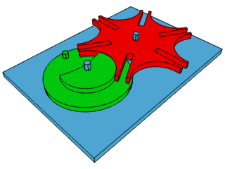
在JavaScript语言中，同步和异步的概念刚好相反。
这JavaScript中同步就是：你不执行完上面的代码，那么下面的代码你就别执行；一步一步执行，这就是同步。
异步就是可以一块执行的代码；
进程的概念
进程≠程序
程序从开始到结束的一次执行过程叫做进程
一个进程当中，程序同时运行的多个分支，叫做线程
多线程异步执行，可以提高程序的效率
AJAX的重要性
在许多数企业看来AJAX的使用熟练程度 === 你的工作经验。
三、AJAX异步加载数据
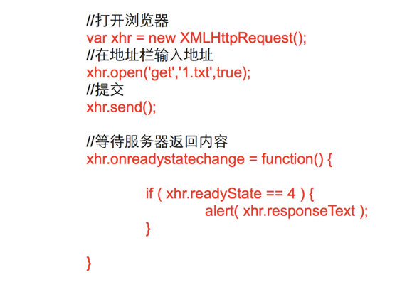
电话的接打顺序：

1.首先要有一个电话；
2.拨号；
3.说话；
4.听电话另一边的信息；
3.1AJAX对象的浏览器兼容
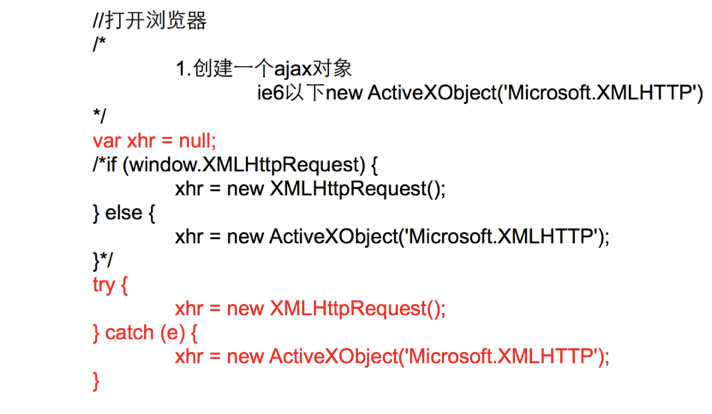
3.2try…throw…catch
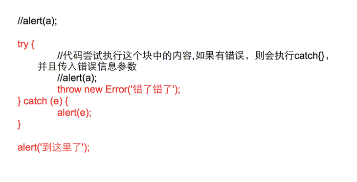
3.3AJAX(open方法)
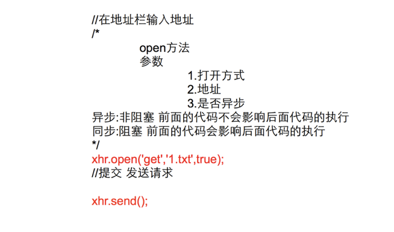
3.4AJAX-onreadystatechange
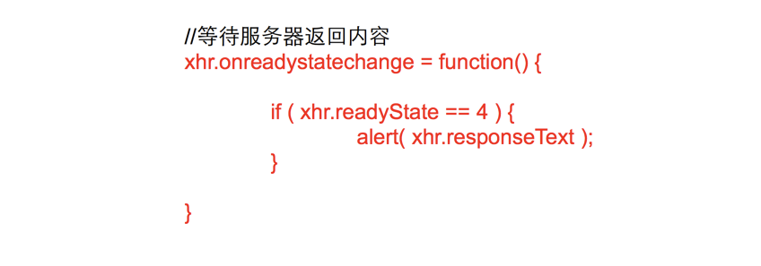
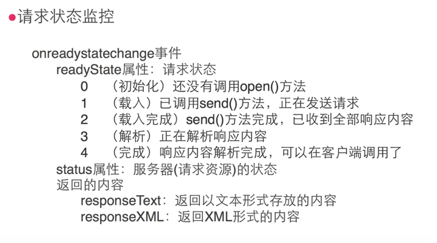
3.5AJAX-status属性
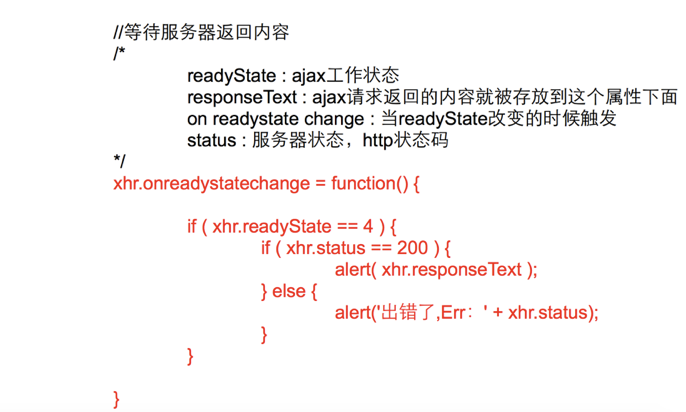
HTTP 状态码 ajax.status
AJAX状态码说明
1**：请求收到，继续处理
2**：操作成功收到，分析、接受
3**：完成此请求必须进一步处理
4**：请求包含一个错误语法或不能完成
5**：服务器执行一个完全有效请求失败
100——客户必须继续发出请求
101——客户要求服务器根据请求转换HTTP协议版本
200——交易成功
201——提示知道新文件的URL
202——接受和处理、但处理未完成
203——返回信息不确定或不完整
204——请求收到，但返回信息为空
205——服务器完成了请求，用户代理必须复位当前已经浏览过的文件
206——服务器已经完成了部分用户的GET请求
300——请求的资源可在多处得到
301——删除请求数据
302——在其他地址发现了请求数据
303——建议客户访问其他URL或访问方式
304——客户端已经执行了GET，但文件未变化
305——请求的资源必须从服务器指定的地址得到
306——前一版本HTTP中使用的代码，现行版本中不再使用
307——申明请求的资源临时性删除
400——错误请求，如语法错误
401——请求授权失败
402——保留有效ChargeTo头响应
403——请求不允许
404——没有发现文件、查询或URl
405——用户在Request-Line字段定义的方法不允许
406——根据用户发送的Accept拖，请求资源不可访问
407——类似401，用户必须首先在代理服务器上得到授权
408——客户端没有在用户指定的饿时间内完成请求
409——对当前资源状态，请求不能完成
410——服务器上不再有此资源且无进一步的参考地址
411——服务器拒绝用户定义的Content-Length属性请求
412——一个或多个请求头字段在当前请求中错误
413——请求的资源大于服务器允许的大小
414——请求的资源URL长于服务器允许的长度
415——请求资源不支持请求项目格式
416——请求中包含Range请求头字段，在当前请求资源范围内没有range指示值，请求也不包含If-Range请求头字段
417——服务器不满足请求Expect头字段指定的期望值，如果是代理服务器，可能是下一级服务器不能满足请求
500——服务器产生内部错误
501——服务器不支持请求的函数
502——服务器暂时不可用，有时是为了防止发生系统过载
503——服务器过载或暂停维修
504——关口过载，服务器使用另一个关口或服务来响应用户，等待时间设定值较长
505——服务器不支持或拒绝支请求头中指定的HTTP版本
四、通过表单实现GET和POST请求
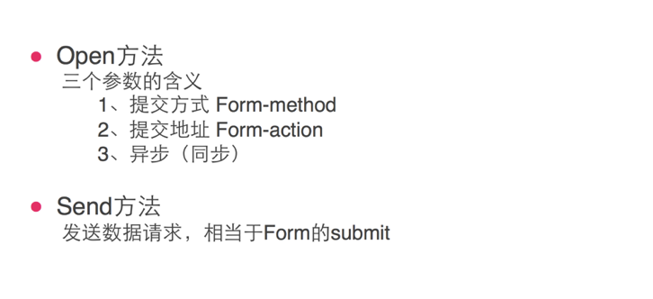
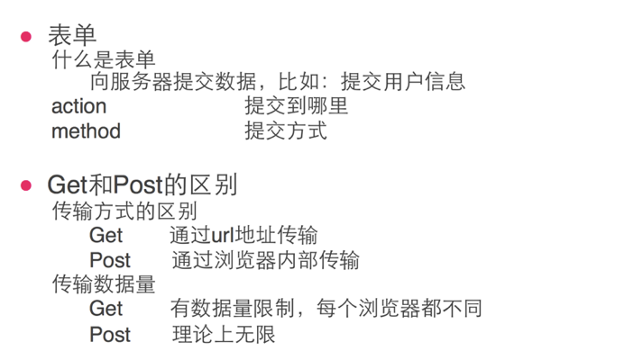
4.1GET和POST——表单
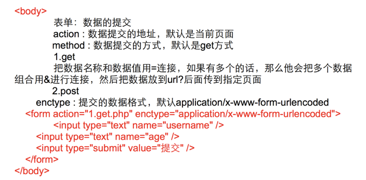
五、AJAX——关于GET请求
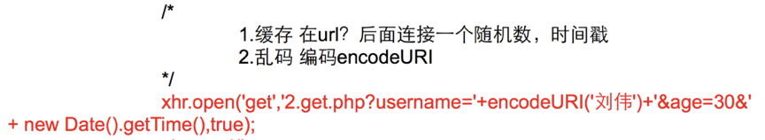
六、AJAX——关于GET请求
xhr.setRequestHeader('content-type', ‘application/x-www-form-urlencoded');
//声明发送的数据类型
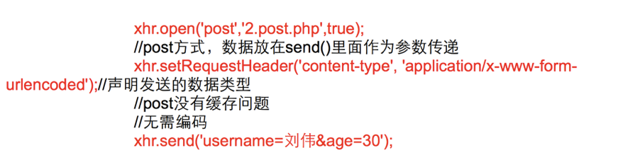
七、AJAX封装
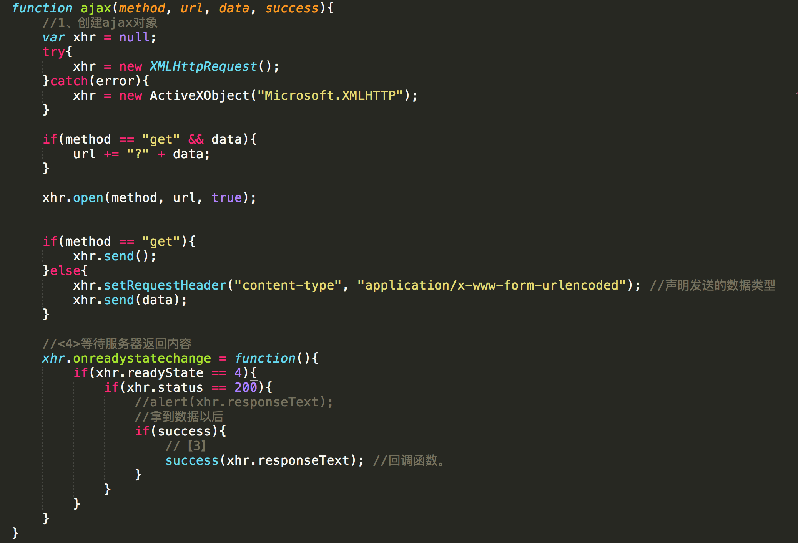
八、JSON对象
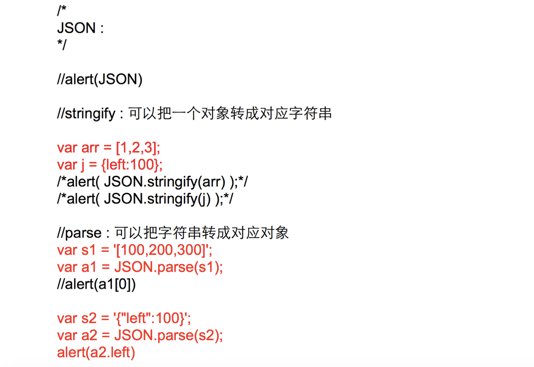
九、拓展总结